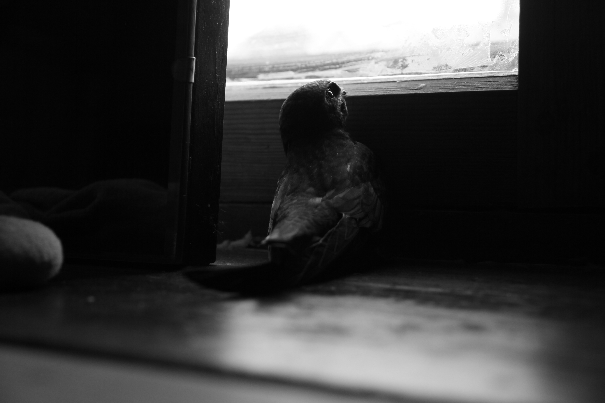
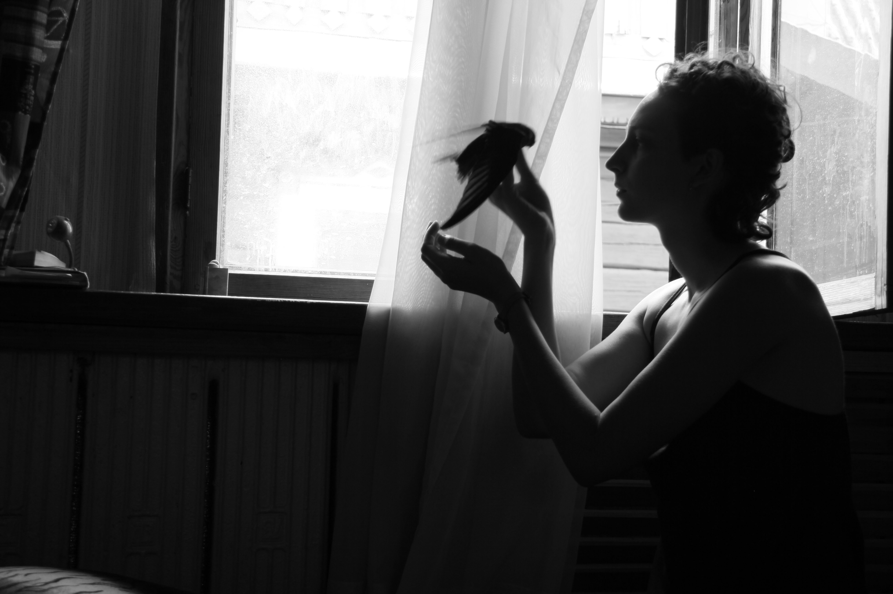
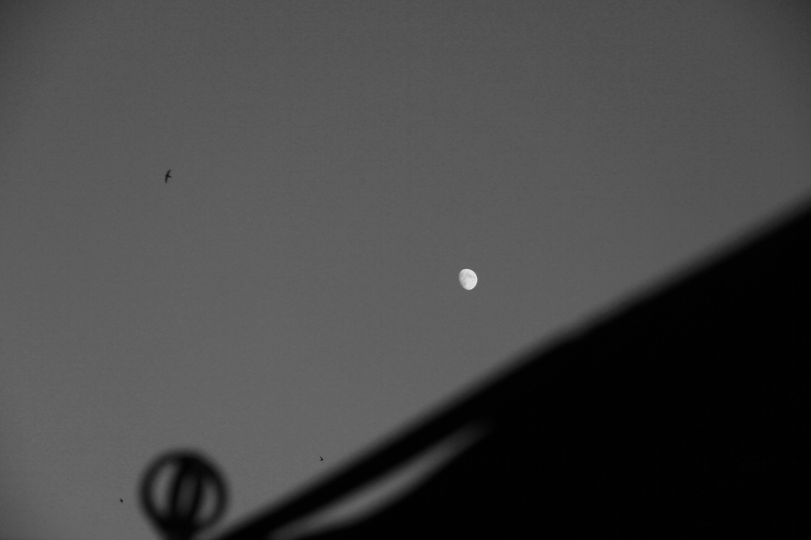

01 / 05

02 / 05

03 / 05
04 / 05

05 / 05
A story of mutual rescue — I saved a swift, and somehow, it saved me. It is a story of longing for the sky, resilience, trust, and the quiet strength to return to where you belong.
His will to fly reminded me that freedom is not something we possess. It is something we protect, and finally let go.
No animals were harmed. One was simply rescued — and given back to the sky.


